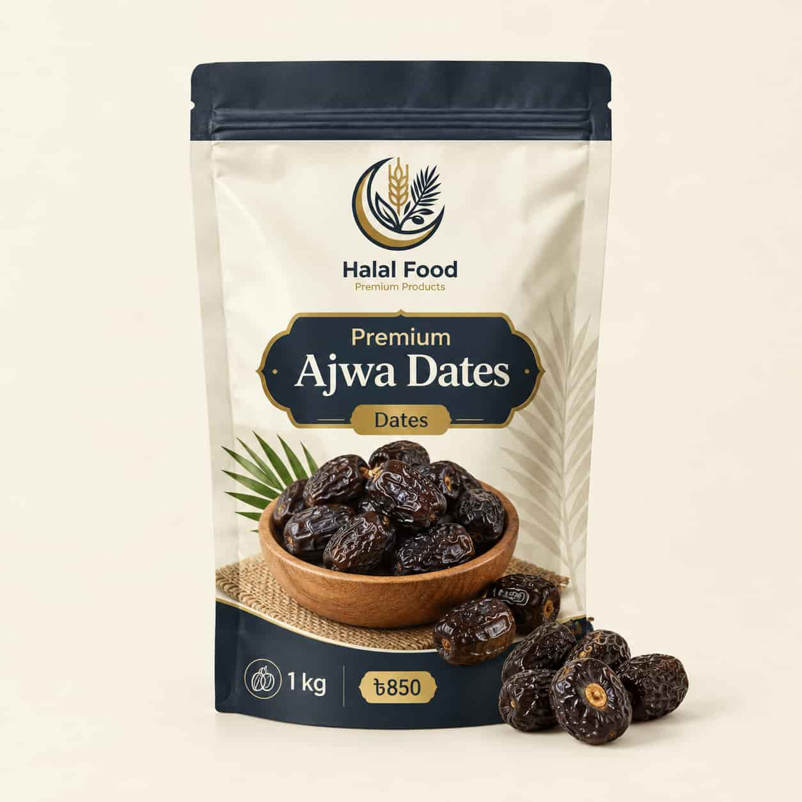

Blog / Dates
Premium Ajwa Dates in Bangladesh: How to Spot Real Ajwa and Buy with Confidence

Premium Ajwa dates are among the most loved dates in Bangladesh, especially at Iftar time and as a gift. But they are also one of the most copied dates in the market. A buyer who does not know what to look for can easily pay a high price for a normal dark date. In this guide, we explain what makes Ajwa special, how to check if a date is real, what a fair price looks like, and how to store and enjoy your dates.
Quick summary
- Real Ajwa dates are small, dark brown to almost black, with a soft but slightly firm body.
- They taste mildly sweet and a little fruity, not very sticky or syrupy.
- A very low price is the first warning sign.
- Buy from a seller who gives clear details about the pack, weight and packing date.
What Makes Ajwa Dates “Premium”?
A date is called premium when its variety, size, freshness and handling are all good. For Ajwa, this means:
- The dates are from the real Ajwa variety, not just any dark date.
- The pieces are clean, even in colour and free from insects or dust.
- They are packed in a clean, sealed pack, so they stay fresh.
- The seller is open about what is inside the pack.
Ajwa dates also take effort to grow and move over long distances, so they cost more than common dates. This is why the price and the quality should always be checked together.
Where Do Real Ajwa Dates Come From?
True Ajwa dates are grown in and around Madinah, Saudi Arabia, and they carry deep cultural and religious meaning. Many sellers mention the Aliyah area of Madinah, which is known for its date orchards. Ajwa is one type among the several date types found in Madinah, so not every date from that city is Ajwa. Source: KashmiriL.
Why Is Ajwa Special for Many Muslims?
Ajwa dates have a special place in Islamic tradition. A well-known narration recorded by Al-Bukhari and Muslim says that whoever eats seven Ajwa dates in the morning will not be harmed by poison or magic that day. Because of this, many families eat Ajwa in the morning or serve it at Iftar, and many people give it as a gift for Eid, Hajj returns and special occasions. Source: Islamic research paper.
This is a matter of faith and tradition. It is not a medical claim, and Ajwa should never replace medicine or a doctor’s advice.
Real vs Fake Ajwa Dates: 8 Simple Checks
Nobody can be 100% sure about a date by looking at it alone. But these checks will help you avoid most bad products.
1. Check the colour
Ajwa dates should be very dark, close to black. If the dates look light brown or reddish, they are probably a different variety. Source: KashmiriL.
2. Check the size
Ajwa is usually smaller than Medjool, so very big dates sold as Ajwa are a reason to ask questions. A good Ajwa is small to medium. Source: Intersales guide.
3. Do not trust too much shine or stickiness
Premium dates have a light natural shine, but dates that look very glossy or too sticky may have been coated. A thick, wet shine is a warning sign. Source: KashmiriL.
4. Look at the skin
Natural dates usually have small wrinkles on the skin, and not every date in a batch has exactly the same colour. A perfect, even look in every piece can be a sign of polishing. Source: Asianet Newsable.
5. Smell the dates
Fresh dates have a soft, sweet smell. A sour smell, or a smell like alcohol, means the dates have started to spoil.
6. Taste and feel
Real Ajwa is soft, but a little firm and a little dry compared with very sticky dates. The taste is mild and fruity. If the date tastes like thick sugar syrup, be careful.
7. Read the pack
The ingredient list should say only “dates”. Look for the net weight, the packing date, the seller details and the origin. A pack with no details gives you no way to check anything. Source: Asianet Newsable.
8. Compare the price
If an Ajwa date is suspiciously cheap, it is likely to be fake. Real Ajwa is costly to grow and to bring to Bangladesh, so a price far below the market should make you stop and think. Source: KashmiriL.
A small note on white marks: a thin white layer on a date can be natural sugar. Mould is different. It looks fuzzy and comes with a bad smell.
What Is a Fair Price for Ajwa Dates in Bangladesh?
Prices of dates change with the season, the grade, the pack size and the importer, and they rise before Ramadan. One Bangladeshi news report put the usual market range for Ajwa at about Tk 640 to Tk 800 per kg. During Ramadan this year, retail visits in Dhaka found Ajwa selling for up to about Tk 1,000 per kg. UNB dates price coverage and UNB Ramadan price report.
Use these numbers only as a guide. When you compare sellers, compare the same grade and the same weight, and remember that the cheapest pack is not always the best value.
How Many Ajwa Dates Should You Eat?
Many people follow the tradition of eating seven Ajwa dates in the morning. For general eating, two to three dates is a common serving. Dates are rich in natural sugar and calories, so keep your portion in mind.
If you have diabetes, high blood sugar or any other health condition, please ask your doctor how many dates are right for you before you make it a daily habit.
Easy Ways to Enjoy Ajwa Dates
- Plain: Eat them as they are, with water or tea. This is the simplest and the most traditional way.
- At Iftar: Break your fast with a few dates, then drink water.
- With nuts: Pair them with almonds or walnuts for a filling snack.
- Date paste: Remove the seeds and blend the dates into a smooth paste. You can spread it on bread or mix it into smoothies.
- As a gift: Pack them in a small box with some nuts for Eid or for a visit.
How to Store Ajwa Dates
Keep Ajwa dates in an airtight box, away from water, heat and direct sunlight. In a cool, dry place they stay good for several weeks. In hot and humid weather, keep them in the fridge. For longer storage, you can freeze them in a sealed container for several months, and let them reach room temperature before you eat them. Always use a dry spoon, because water and wet hands can start mould.
How to Order Ajwa Dates Online in Dhaka and Across Bangladesh
Ordering dates online saves time, especially before Ramadan, when the markets are crowded. At Halal Food, you can browse our Dates collection, choose your pack and place your order from home. We deliver inside and outside Dhaka, and you can pay with cash on delivery.
When you order Ajwa dates online in Dhaka or in any other city, check these things before you pay:
- Clear photos and a clear product name
- Pack weight and price per kg
- Delivery area and delivery time
- A phone or WhatsApp number to ask questions
If you are still deciding between two kinds of dates, read our guide on Ajwa dates vs Medjool dates.
Frequently Asked Questions
How can I identify real Ajwa dates?
Look for small, dark brown to almost black dates with wrinkled skin and a soft but slightly firm body. Check that the pack gives clear details, and be careful with very cheap prices.
Why are Ajwa dates so expensive?
Ajwa dates are grown in a limited area, take effort to grow and move, and are in high demand, especially in Ramadan. This is why the price is higher than for common dates.
How many Ajwa dates can I eat in a day?
Many people follow the tradition of seven in the morning. For general eating, two to three is a common serving. If you have diabetes or another condition, ask your doctor first.
Are Ajwa dates healthier than other dates?
All dates give natural carbohydrates, fibre and minerals. Some early studies look at the antioxidants in Ajwa, but strong proof in people is still limited. So enjoy Ajwa for its taste and tradition, and keep your portion sensible.
Can I buy premium Ajwa dates online in Bangladesh?
Yes. You can order from the Halal Food Dates collection and get them delivered to your home.
Final Thoughts
Premium Ajwa dates are worth buying when you know what to look for. Check the colour, size, skin, smell and pack details, and always compare the price with the market. A real Ajwa date is small, dark, mildly sweet and sold with clear information. If you follow these simple checks, you can buy with confidence and enjoy every date.
Ready to order? Visit our Dates collection and pick the pack that suits you.